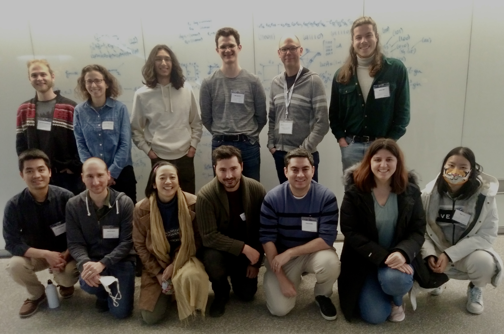

Research
I am a PhD student working in the group* of algebraic combinatorists in the Department of Combinatorics and Optimization at the University of Waterloo. I am partially supported by NSERC and a University of Waterloo President's Graduate Scholarship.
My research is in combinatorial and computational algebraic geometry. Recently, I have been looking at Hessenberg varieties, matrix Schubert varieties, and toric ideals of graphs using tools such as Frobenius splitting and geometric vertex decomposition. I enjoy experimenting in Macaulay2.
Papers
My papers are also available on the arXiv. You can also view my profiles on Google Scholar, MathSciNet, and zbMath.
-
The GeometricDecomposability package for Macaulay2
with Adam Van Tuyl
Journal of Software for Algebra and Geometry 14 (2024), no. 1, 41–50Abstract. Using the geometric vertex decomposition property first defined by Knutson, Miller, and Yong, a recursive definition for geometrically vertex decomposable ideals was given by Klein and Rajchgot. We introduce the Macaulay2 package
GeometricDecomposabilitywhich provides a suite of tools to experiment and test the geometric vertex decomposability property of an ideal. -
Gröbner geometry for regular nilpotent Hessenberg Schubert cells
with Sergio Da Silva, Megumi Harada, and Jenna Rajchgot
Journal of Pure and Applied Algebra 228 (2024), no. 7, 107648Abstract. A regular nilpotent Hessenberg Schubert cell is the intersection of a regular nilpotent Hessenberg variety with a Schubert cell. In this paper, we describe a set of minimal generators of the defining ideal of a regular nilpotent Hessenberg Schubert cell in the type A setting. We show that these minimal generators are a Gröbner basis for an appropriate lexicographic monomial order. As a consequence, we obtain a new computational-algebraic proof, in type A, of Tymoczko’s result that regular nilpotent Hessenberg varieties are paved by affine spaces. In addition, we prove that these defining ideals are complete intersections, are geometrically vertex decomposable, and compute their Hilbert series. We also produce a Frobenius splitting of each Schubert cell that compatibly splits all of the regular nilpotent Hessenberg Schubert cells contained in it. This work builds on, and extends, work of the second and third author on defining ideals of intersections of regular nilpotent Hessenberg varieties with the (open) Schubert cell associated to the Bruhat-longest permutation.
-
Geometric vertex decomposition and liaison for toric ideals of graphs
with Sergio Da Silva, Jenna Rajchgot, and Adam Van Tuyl
Algebraic Combinatorics 6 (2023), no. 4, 965–997
Abstract. Geometric vertex decomposability for polynomial ideals is an ideal-theoretic generalization of vertex decomposability for simplicial complexes. Indeed, a homogeneous geometrically vertex decomposable ideal is radical and Cohen-Macaulay, and is in the Gorenstein liaison class of a complete intersection (glicci).
In this paper, we initiate an investigation into when the toric ideal IG of a finite simple graph G is geometrically vertex decomposable. We first show how geometric vertex decomposability behaves under tensor products, which allows us to restrict to connected graphs. We then describe a graph operation that preserves geometric vertex decomposability, thus allowing us to build many graphs whose corresponding toric ideals are geometrically vertex decomposable. Using work of Constantinescu and Gorla, we prove that toric ideals of bipartite graphs are geometrically vertex decomposable. We also propose a conjecture that all toric ideals of graphs with a square-free degeneration with respect to a lexicographic order are geometrically vertex decomposable. As evidence, we prove the conjecture in the case that the universal Gröbner basis of IG is a set of quadratic binomials. We also prove that some other families of graphs have the property that IG is glicci.
Software
-
GeometricDecomposability,
a Macaulay2 package to check whether ideals are geometrically vertex decomposable, and related methods
with Adam Van Tuyl
For changes by version, see the changelog
I also wrote the IntegerProgramming package for Macaulay2 package as part of a project for the course Computational Commutative Algebra and Algebraic Geometry with Mike Stillman at the Fields Institute in Winter 2025.
Theses
-
Gröbner Geometry for Hessenberg Varieties
Master's Thesis, McMaster University, 2024
Supervisor: Jenna RajchgotAbstract. We study Hessenberg varieties in type A via their local defining equations, called patch ideals. We focus on two main classes of Hessenberg varieties: those associated to a regular nilpotent operator and those associated to a semisimple operator.
In the setting of regular semisimple Hessenberg varieties, which are known to be smooth and irreducible, we determine that their patch ideals are triangular complete intersections, as defined by Da Silva and Harada. For semisimple Hessenberg varieties, we give a partial positive answer to a conjecture of Insko and Precup that a given family of set-theoretic local defining ideals are radical.
A regular nilpotent Hessenberg Schubert cell is the intersection of a Schubert cell with a regular nilpotent Hessenberg variety. Following the work of the author with Da Silva, Harada, and Rajchgot, we construct an embedding of the regular nilpotent Hessenberg Schubert cells into the coordinate chart of the regular nilpotent Hessenberg variety corresponding to the longest-word permutation in Bruhat order. This allows us to use work of Da Silva and Harada to conclude that regular nilpotent Hessenberg Schubert cells are also local triangular complete intersections.
-
Geometric Vertex Decomposition and Hessenberg Patch Ideals
Undergraduate Thesis, McMaster University, 2022
Supervisors: Sergio Da Silva, Megumi Harada, and Jenna Rajchgot
Many then-current and former members of McMaster's algebra group attended CAAC 2023 at the University of Waterloo.

Top row:
Illya Kierkosz,
Jenna Rajchgot,
Kieran Bhaskara,
myself,
Adam Van Tuyl,
Adrian Cook.
Bottom row:
Thái Thành Nguyễn,
Federico Galetto,
Megumi Harada,
Graham Keiper,
Sergio Da Silva,
Büşra Atar,
Runyue Wang.
*The underlying set is the collection of members. The group operation remains unclear.